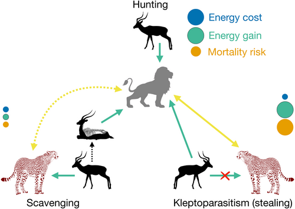
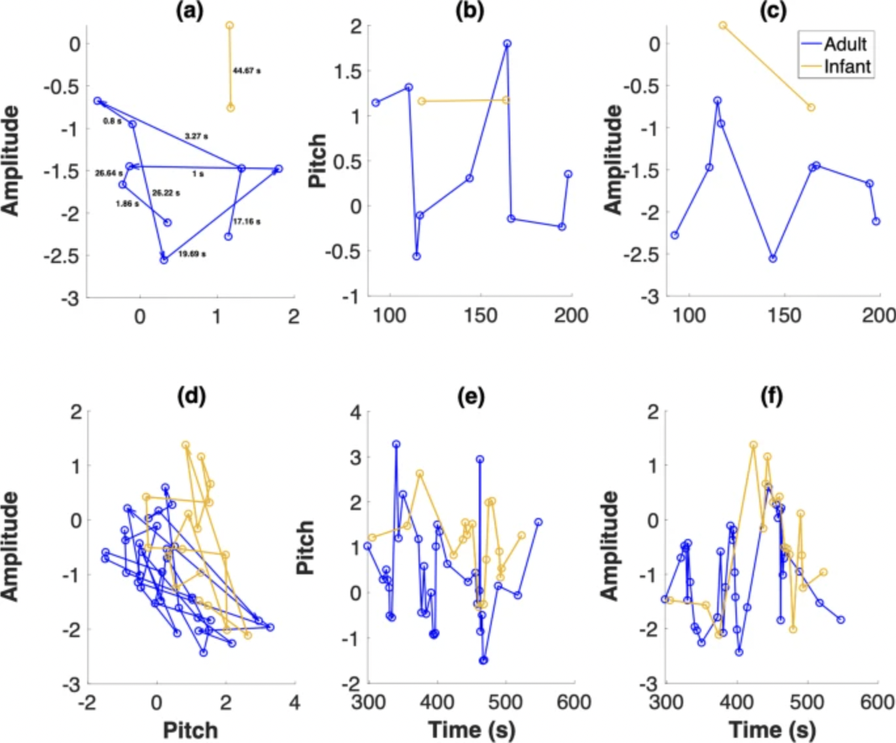

|
I'm an academic researcher with a background in physics, ecology, and infant vocal development studies, currently looking for my next postdoctoral position.
I received my PhD in Physics from UC Merced with Prof. Ajay Gopinathan and Prof. Justin Yeakel, where I used computational physics approaches to study multi-agent foraging phenomena on complex resource landscapes in different contexts.
I currently work with Prof. Anne Warlaumont at UCLA, and most recently, was a postdoctoral researcher in the Warlaumont lab, where I expanded on my graduate work on studying how caregiver vocal input modifies infant vocalisation patterns.
|

|
|
ritwika [at] ucmerced [dot] edu
|
|
news
| September 2024 |
Looking for a new postdoc! |
May 2024 |
New paper out in Journal of Animal Ecology! |
2021 and Earlier
|
2024 |
|

|
Beyond the kill: The allometry of predation behaviours among large carnivores
V. P. S. Ritwika, Ajay Gopinathan, Justin D. Yeakel
We use an energetics approach to investigate the survival advantages of hunting, scavenging and kleptoparasitism as a function of predator, prey and potential competitor body sizes for terrestrial mammalian carnivores.
The Journal of Animal Ecology, 08 Mar 2024, 93(5):554-566
https://doi.org/10.1111/1365-2656.14070
article
|
2020 |
|

|
Exploratory dynamics of vocal foraging during infant-caregiver communication
V. P. S. Ritwika, Gina M. Pretzer, Sara Mendoza, Christopher Shedd, Christopher T. Kello, Ajay Gopinathan, Anne S. Warlaumont
We investigated the hypothesis that infants search in an acoustic space for vocalisations that elicit adult utterances and vice versa, inspired by research on animal and human foraging.
Scientific Reports volume 10, Article number: 10469 (2020)
https://doi.org/10.1038/s41598-020-66778-0
article
|
|